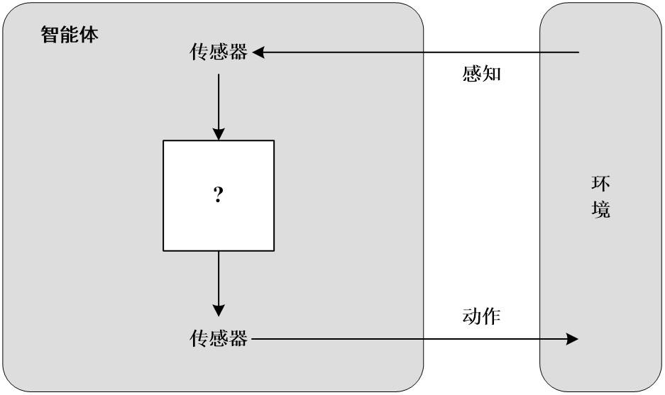
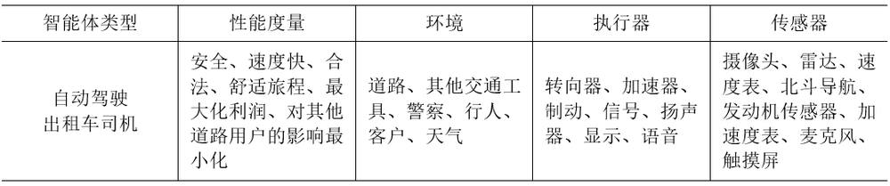
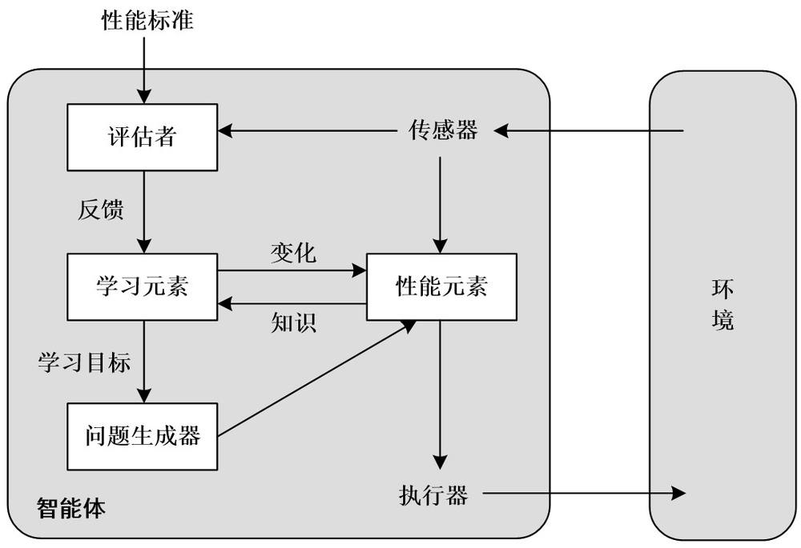
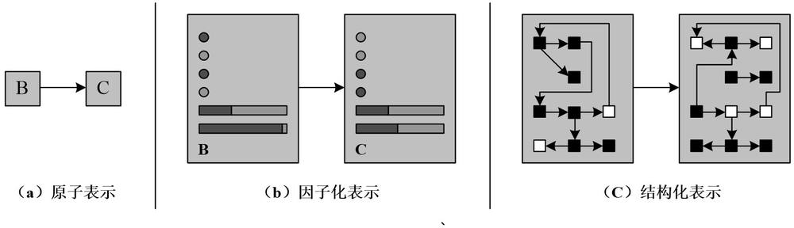
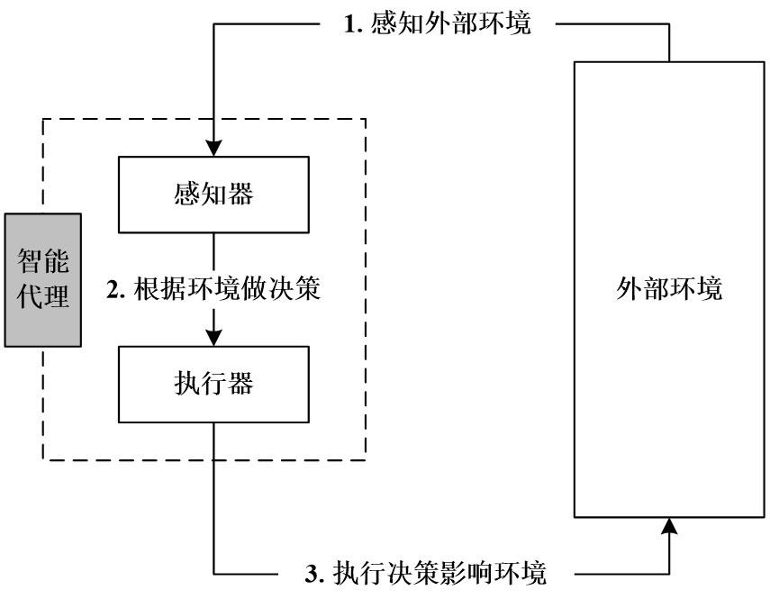
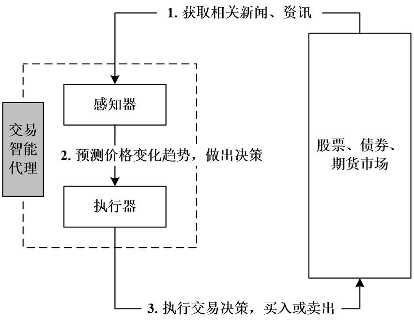
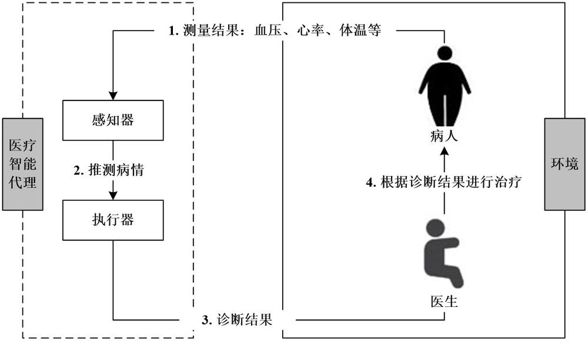
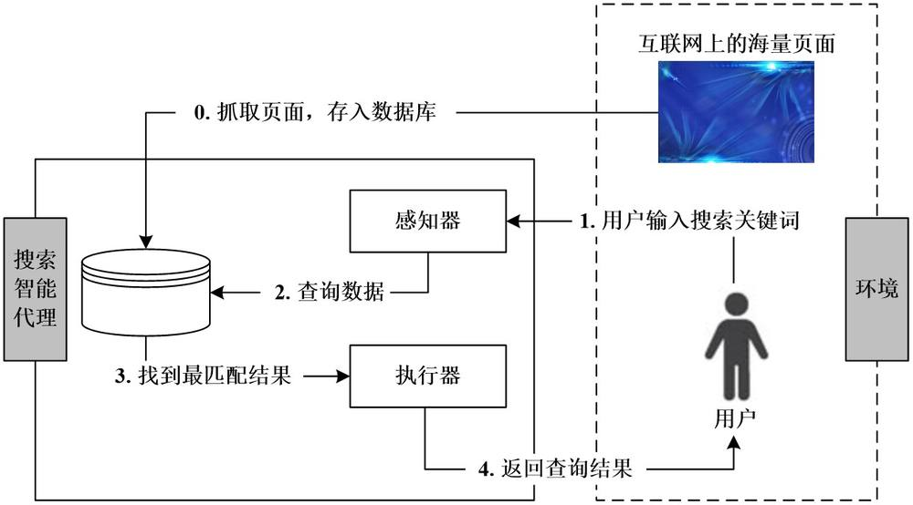
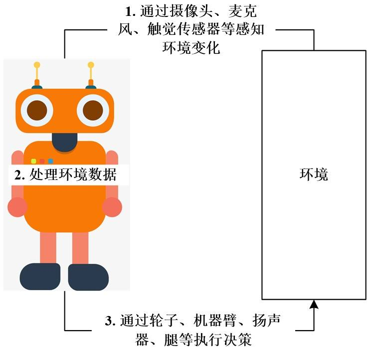

第 1 页 · 数智人才培养

数智人才培养
AI通识精品系列
周苏 教授 QQ：81505050
人工智能通识教程

第 2 页 · 第4章
第4章
周苏 教授 QQ：81505050
智能体技术


第 3 页 · 智能体（Agents）是人工智能领域中一个很重要的概念，它是指能自主活动的软件或者硬件实体，任何独立的能够思考并可以同环
智能体（Agents）是人工智能领域中一个很重要的概念，它是指能自主活动的软件或者硬件实体，任何独立的能够思考并可以同环境交互的实体都可以抽象为智能体。由此，人工智能可以进一步被定义为“对从环境中接受感知并执行行动的智能体的研究”。智能体概念既能概括为以机器为载体的人工智能，也能概括以有机体为载体的生物智能——生物就是感知环境并适应环境的有机智能体。更一般地，“智能是系统通过获取和加工信息而获得的一种能力，从而实现从简单到复杂的演化”，这也同时涵盖了生物智能和机器智能。
第4章 智能体技术
第 4 页 · 01

01
智能体
和环境
02
智能体的
良好行为
03
环境的
本质
04
智能体
的结构
目录 / CONTENTS
05
智能代理
技术
06
智能代理
的典型应用
第 5 页 · PART 01
PART 01
智能体和环境
第 6 页 · 任何通过传感器感知环境并通过执行器作用于该环境的事物都可以被视为智能体。我们从检查智能体、环境以及它们之间的耦合，观察到
任何通过传感器感知环境并通过执行器作用于该环境的事物都可以被视为智能体。我们从检查智能体、环境以及它们之间的耦合，观察到某些智能体比其他智能体表现得更好，由此可以引出理性智能体的概念，即行为尽可能好。智能体的行为取决于环境的性质。
图4-1 智能体通过传感器和执行器
与环境交互
4.1 智能体和环境

第 7 页 · 一个人类智能体以眼睛、耳朵和其他器官作为传感器，以手、腿、声道等作为执行器。机器人智能体可能以摄像头和红外测距仪作为传感
一个人类智能体以眼睛、耳朵和其他器官作为传感器，以手、腿、声道等作为执行器。机器人智能体可能以摄像头和红外测距仪作为传感器，各种电动机作为执行器。软件智能体接收文件内容、网络数据包和人工输入（键盘／鼠标／触摸屏／语音）作为传感输入，并通过写入文件、发送网络数据包、显示信息或生成声音对环境进行操作。环境可以是一切，甚至是整个宇宙。实际上，我们在设计智能体时关心的只是宇宙中某一部分的状态，即影响智能体感知以及受智能体动作影响的部分。
4.1 智能体和环境
第 8 页 · 我们使用术语感知来表示智能体的传感器知觉的内容。一般而言，一个智能体在任何给定时刻的动作选择，可能取决于其内置知识和迄今
我们使用术语感知来表示智能体的传感器知觉的内容。一般而言，一个智能体在任何给定时刻的动作选择，可能取决于其内置知识和迄今为止观察到的整个感知序列，而不是它未感知到的任何事物。通过为每个可能的感知序列指定智能体的动作选择，或多或少地说明了关于智能体的内容。智能体的行为由智能体函数描述，该函数将任意给定的感知序列映射到一个动作。
4.1 智能体和环境
第 9 页 · 可以想象将描述任何给定智能体的智能体函数制成表格，对大多数智能体来说，这将是一个非常大的表，事实上是无限的（除非限制所考
可以想象将描述任何给定智能体的智能体函数制成表格，对大多数智能体来说，这将是一个非常大的表，事实上是无限的（除非限制所考虑的感知序列的长度）。给定一个要进行实验的智能体，原则上，可以通过尝试所有可能的感知序列并记录智能体响应的动作来构建此表，当然，除了这些外部特征，在内部，智能体的智能体函数将由智能体程序实现，智能体函数是一种抽象的数学描述，而智能体程序是一个具体的实现，可以在某些物理系统中运行。
我们来举一个简单例子——真空吸尘器。
4.1 智能体和环境
第 10 页 · 在一个由方格组成的世界中，有一个机器人真空吸尘器智能体，其中的方格可能是脏的，也可能是干净的。考虑只有两个方格的情况——
在一个由方格组成的世界中，有一个机器人真空吸尘器智能体，其中的方格可能是脏的，也可能是干净的。考虑只有两个方格的情况——方格A和方格B。真空吸尘器智能体可以感知它在哪个方格中以及方格中是否干净。智能体从方格A开始，可选的操作包括向右移动、向左移动、吸尘或什么都不做（其实，真正的机器人不太可能会有“向右移动”和“向左移动”，而是采用“向前旋转轮子”和“向后旋转轮子”这样的动作）。一个简单智能体函数如下：如果当前方格是脏的，就吸尘；否则，移动到另一个方格。
4.1 智能体和环境
第 11 页 · 智能体概念主要用作为分析系统的工具，而不是将世界划分为智能体和非智能体的绝对表征。在某种意义上，工程的所有领域都可以被视
智能体概念主要用作为分析系统的工具，而不是将世界划分为智能体和非智能体的绝对表征。在某种意义上，工程的所有领域都可以被视为设计与世界互动的人工制品，人工智能运行在最有趣的一端，在这一端，人工制品具有重要的计算资源，任务环境需要非凡的决策。
4.1 智能体和环境
第 12 页 · PART 02
PART 02
智能体的良好行为
第 13 页 · 理性智能体是做正确事情的事物。人工智能通常通过结果来评估智能体的行为。当智能体进入环境时，它会根据接受的感知产生一个动作
理性智能体是做正确事情的事物。人工智能通常通过结果来评估智能体的行为。当智能体进入环境时，它会根据接受的感知产生一个动作序列，这会导致环境经历一系列的状态。如果序列是理想的，则智能体表现良好，这个概念由性能度量描述，评估任何给定环境状态的序列。
4.2 智能体的良好行为
第 14 页 · 人类有适用于自身的理性概念，它与成功选择产生环境状态序列的行动有关，这些环境状态序列从人类的角度来看是可取的。但是机器没
人类有适用于自身的理性概念，它与成功选择产生环境状态序列的行动有关，这些环境状态序列从人类的角度来看是可取的。但是机器没有自己的欲望和偏好，至少在最初，性能度量是在机器设计者的头脑中或者是在机器受众的头脑中。一些智能体设计具有性能度量的显式表示，而在其他设计中，性能度量完全是隐式的，智能体可能会做正确的事情，但它不知道为什么。
4.2.1 性能度量
第 15 页 · 应该确保“施以机器的目的是我们真正想要的目的”，但是正确地制定性能度量可能非常困难。例如考虑真空吸尘器智能体，可能会建议
应该确保“施以机器的目的是我们真正想要的目的”，但是正确地制定性能度量可能非常困难。例如考虑真空吸尘器智能体，可能会建议用单个8小时班次中清理的灰尘量来度量性能。然而，一个理性的智能体可以通过清理灰尘，然后将其全部倾倒在地板上，然后再次清理，如此反复，从而最大化这一性能度量值。更合适的性能度量是奖励拥有干净地板的智能体。例如在每个时间步中，每个干净方格可以获得1分（可能会对耗电和产生的噪声进行惩罚）。作为一般规则，更好的做法是根据一个人在环境中真正想要实现的目标，而不是根据一个人认为智能体应该如何表现来设计性能度量。
4.2.1 性能度量
第 16 页 · 即使避免了明显的缺陷，一些棘手的问题仍然存在。例如，“干净地板”的概念是基于一段时间内的平均整洁度。然而，两个不同的智能
即使避免了明显的缺陷，一些棘手的问题仍然存在。例如，“干净地板”的概念是基于一段时间内的平均整洁度。然而，两个不同的智能体可以达到相同的平均整洁度，其中一个智能体工作始终保持一般水平，而另一个智能体短时间工作效率很高但需要长时间的休息。哪种工作方式更可取，这似乎是保洁工作的好课题，而实际上还是一个具有深远影响的哲学问题。
4.2.1 性能度量
第 17 页 · 在任何时候，理性取决于以下4方面：
在任何时候，理性取决于以下4方面：
（1）定义成功标准的性能度量；
（2）智能体对环境的先验知识；
（3）智能体可以执行的动作；
（4）智能体到目前为止的感知序列。
于是，对理性智能体的定义是：对于每个可能的感知序列，给定感知序列提供的证据和智能体所拥有的任何先验知识，理性智能体应该选择一个期望最大化其性能度量的动作。
4.2.2 理 性
第 18 页 · 以一个简单真空吸尘器智能体为例，我们首先需要说明性能度量是什么，对环境了解多少，以及智能体具有哪些传感器和执行器。显然，
以一个简单真空吸尘器智能体为例，我们首先需要说明性能度量是什么，对环境了解多少，以及智能体具有哪些传感器和执行器。显然，同一个智能体在不同情况下可能会变得不理性。例如，在清除所有灰尘后，该智能体会毫无必要地反复来回；如果考虑对每个动作罚1分，那么智能体的表现就会很差。在确定所有方格都干净的情况下，一个好的智能体不会做任何事情。如果干净的方格再次变脏，智能体应该偶尔检查，并在必要时重新清理。如果环境地理信息是未知的，智能体则需要对其进行探索。
4.2.2 理 性
第 19 页 · 我们需要仔细区分理性和全知。全知的智能体能预知其行动的实际结果，并据此采取行动，但在现实中，全知是不可能的，理性不等同于
我们需要仔细区分理性和全知。全知的智能体能预知其行动的实际结果，并据此采取行动，但在现实中，全知是不可能的，理性不等同于完美。理性使期望性能最大化，而完美使实际性能最大化。不要求完美不仅仅是对智能体公平的问题，关键是，如果期望一个智能体做事后证明是最好的行动，就不可能设计一个符合规范的智能体。因此，对理性的定义并不需要全知，因为理性决策只取决于迄今为止的感知序列。我们还必须确保没有无意中允许智能体进行低智的行动。
4.2.3 全知、学习和自主
第 20 页 · 首先，考虑到这种缺乏信息的感知序列，过马路是不理性的：不观察路况就过马路发生事故的风险太大。其次，理性智能体在上街之前应
首先，考虑到这种缺乏信息的感知序列，过马路是不理性的：不观察路况就过马路发生事故的风险太大。其次，理性智能体在上街之前应该选择“观察”动作，因为观察有助于最大化期望性能。采取行动来改变未来的感知，有时被称为信息收集，这是理性的一个重要组成部分。
4.2.3 全知、学习和自主
第 21 页 · 我们的定义要求理性智能体不仅要收集信息，还要尽可能多地从它所感知到的东西中学习。智能体的初始配置可以反映对环境的一些先验
我们的定义要求理性智能体不仅要收集信息，还要尽可能多地从它所感知到的东西中学习。智能体的初始配置可以反映对环境的一些先验知识，但随着智能体获得经验，这可能会被修改和增强。在一些极端情况下，环境完全是先验已知的和完全可预测的，这种情况下智能体不需要感知或学习，只需正确地运行。当然，这样的智能体是脆弱的。
4.2.3 全知、学习和自主
第 22 页 · 如果在某种程度上智能体依赖于其设计者的先验知识，而不是其自身的感知和学习过程，就说该智能体缺乏自主性。一个理性的智能体应
如果在某种程度上智能体依赖于其设计者的先验知识，而不是其自身的感知和学习过程，就说该智能体缺乏自主性。一个理性的智能体应该是自主的，它应该学习如何弥补部分或不正确的先验知识，例如学习预测何时何地会出现额外灰尘的真空吸尘器就比不能学习预测的要好。
4.2.3 全知、学习和自主
第 23 页 · 实际上，很少从一开始就要求智能体完全自主：除非设计者提供一些帮助，否则当智能体几乎没有经验时，它将不得不随机行动。正如进
实际上，很少从一开始就要求智能体完全自主：除非设计者提供一些帮助，否则当智能体几乎没有经验时，它将不得不随机行动。正如进化为动物提供了足够的内建反射，使其能够生存足够长的时间来学习一样，为人工智能体提供一些初始知识和学习能力也是合理的。在充分体验相应环境后，理性智能体的行为可以有效地独立于其先验知识。因此，结合学习能够让我们设计单个理性智能体，它能在各种各样的环境中取得成功。
4.2.3 全知、学习和自主
第 24 页 · PART 03
PART 03
环境的本质
第 25 页 · 有了理性的定义，构建理性智能体还必须考虑任务环境，它本质上是“问题”，理性智能体是“解决方案”。首先是指定任务环境，然后
有了理性的定义，构建理性智能体还必须考虑任务环境，它本质上是“问题”，理性智能体是“解决方案”。首先是指定任务环境，然后展示任务环境的多种形式。任务环境的性质直接影响到智能体程序的恰当设计。
4.3 环境的本质
第 26 页 · 讨论简单真空吸尘器智能体的理性时，必须为其指定性能度量、环境以及智能体的执行器和传感器，这些都归于任务环境的范畴，称为P
讨论简单真空吸尘器智能体的理性时，必须为其指定性能度量、环境以及智能体的执行器和传感器，这些都归于任务环境的范畴，称为PEAS（Performance性能，Environment环境，Actuator执行器，Sensor传感器）描述。在设计智能体时，第一步始终是尽可能完整地指定任务环境。我们来考虑一个更复杂的问题：自动驾驶出租车的任务环境PEAS描述（见表4-1）。
4.3.1 指定任务环境
第 27 页 · 表4-1 自动驾驶出租车司机任务环境的PEAS描述
表4-1 自动驾驶出租车司机任务环境的PEAS描述
4.3.1 指定任务环境

第 28 页 · 首先，对于自动驾驶追求的性能度量，理想的标准包括到达正确的目的地，尽量减少油耗和磨损，尽量减少行程时间或成本，尽量减少违
首先，对于自动驾驶追求的性能度量，理想的标准包括到达正确的目的地，尽量减少油耗和磨损，尽量减少行程时间或成本，尽量减少违反交通法规和对其他驾驶员的干扰，最大限度地提高安全性和乘客舒适度，最大化利润。显然，其中有一些目标是相互冲突的，需要权衡。接下来，出租车将面临什么样的驾驶环境？任何出租车司机都必须能够在各种道路上行驶，如乡村车道、城市小巷以及多个车道的高速公路。
4.3.1 指定任务环境
第 29 页 · 道路上有其他交通工具、行人、流浪动物、道路工程、警车、水坑和坑洼。出租车还必须与潜在以及实际的乘客互动。另外，还有一些可
道路上有其他交通工具、行人、流浪动物、道路工程、警车、水坑和坑洼。出租车还必须与潜在以及实际的乘客互动。另外，还有一些可选项。出租车可以选择在很少下雪的南方或者经常下雪的北方运营。显然，环境越受限，设计问题就越容易解决。
自动驾驶出租车的执行器包括可供人类驾驶员使用的器件，例如通过加速器控制发动机以及控制转向和制动。此外，它还需要输出到显示屏或语音合成器，以便与乘客进行对话，或许还需要某种方式与其他车辆进行礼貌的或其他方式的沟通。
4.3.1 指定任务环境
第 30 页 · 出租车的基本传感器将包括一个或多个摄像头以便观察，以及激光雷达和超声波传感器以便检测其他车辆和障碍物的距离。为了避免超速
出租车的基本传感器将包括一个或多个摄像头以便观察，以及激光雷达和超声波传感器以便检测其他车辆和障碍物的距离。为了避免超速罚单，出租车应该有一个速度表，而为了正确控制车辆（特别是在弯道上），它应该有一个加速度表。要确定车辆的机械状态，需要发动机、燃油和电气系统的传感器常规阵列。像许多人类驾驶者一样，它可能需要获取北斗导航信号，这样就不会迷路。最后，乘客需要触摸屏或语音输入才能说明目的地。
4.3.1 指定任务环境
第 31 页 · 人工智能中可能出现的任务环境范围非常广泛。然而，我们可以确定少量的维度，并根据这些维度对任务环境进行分类。这些维度在很大
人工智能中可能出现的任务环境范围非常广泛。然而，我们可以确定少量的维度，并根据这些维度对任务环境进行分类。这些维度在很大程度上决定了恰当的智能体设计以及智能体实现的主要技术系列的适用性。首先我们列出维度，然后分析任务环境，阐明思路。
4.3.2 任务环境的属性
第 32 页 · （1）完全可观测与部分可观测：如果智能体的传感器能让它在每个时间点都能访问环境的完整状态，那么我们说任务环境是完全可观测
（1）完全可观测与部分可观测：如果智能体的传感器能让它在每个时间点都能访问环境的完整状态，那么我们说任务环境是完全可观测的。如果传感器检测到与动作选择相关的所有方面，那么任务环境就是有效的完全可观测的，而所谓的相关又取决于性能度量标准。完全可观测的环境很容易处理，因为智能体不需要维护任何内部状态来追踪世界。由于传感器噪声大且不准确，或者由于传感器数据中缺少部分状态，环境可能部分可观测。例如，自动驾驶出租车无法感知其他司机的想法。
4.3.2 任务环境的属性
第 33 页 · 如果智能体根本没有传感器，那么环境是不可观测的。在这种情况下，有人可能会认为智能体的困境是无解的，但是，智能体的目标可能
如果智能体根本没有传感器，那么环境是不可观测的。在这种情况下，有人可能会认为智能体的困境是无解的，但是，智能体的目标可能仍然可以实现。
4.3.2 任务环境的属性
第 34 页 · （2）单智能体与多智能体：单智能体和多智能体环境之间的区别似乎足够简单。例如，下国际象棋的智能体就处于二智能体环境中。然
（2）单智能体与多智能体：单智能体和多智能体环境之间的区别似乎足够简单。例如，下国际象棋的智能体就处于二智能体环境中。然而，这里也有一些微妙的问题。例如智能体A（出租车司机）是否必须将对象B（另一辆车）视为智能体，还是可以仅将其视为根据物理定律运行的对象。关键在于B的行为是否描述为一个性能度量，而这一性能度景的值取决于智能体A的行为。在出租车驾驶环境中，出租车就处在一个部分合作的多智能体环境中。多智能体环境中的智能体设计问题通常与单智能体环境下有较大差异。
4.3.2 任务环境的属性
第 35 页 · （3）确定性与非确定性：如果环境的下一个状态完全由当前状态和智能体执行的动作决定，那么就说环境是确定性的，否则是非确定性
（3）确定性与非确定性：如果环境的下一个状态完全由当前状态和智能体执行的动作决定，那么就说环境是确定性的，否则是非确定性的。原则上，在完全可观测的确定性环境中，智能体不需要担心不确定性。然而，如果环境是部分可观测的，那么它可能是非确定性的。
4.3.2 任务环境的属性
第 36 页 · 大多数真实情况非常复杂，以至于不可能追踪所有未观测到的方面；出于实际目的，必须将其视为非确定性的。从这个意义上讲，出租车
大多数真实情况非常复杂，以至于不可能追踪所有未观测到的方面；出于实际目的，必须将其视为非确定性的。从这个意义上讲，出租车驾驶显然是非确定性的，因为人们永远无法准确地预测交通行为。此外，轮胎可能会意外爆胎，发动机可能会在没有警告的情况下失灵。我们描述的真空吸尘器世界是确定性的，但变化可能包括非确定性因素，如随机出现的灰尘和不可靠的吸力机制。
4.3.2 任务环境的属性
第 37 页 · 最后注意，如果环境模型显式地处理概率（如“明天的降雨可能性为25％”），那么它是随机的；如果可能性没有被量化，那么它是“
最后注意，如果环境模型显式地处理概率（如“明天的降雨可能性为25％”），那么它是随机的；如果可能性没有被量化，那么它是“非确定性的”（如“明天有可能下雨”）。
4.3.2 任务环境的属性
第 38 页 · （4）回合式与序贯：在回合式任务环境中，智能体的经验被划分为原子式的回合，每接收一个感知，然后执行单个动作。重要的是，下
（4）回合式与序贯：在回合式任务环境中，智能体的经验被划分为原子式的回合，每接收一个感知，然后执行单个动作。重要的是，下一回合并不依赖于前几回合采取的动作。许多分类任务是回合式的。例如在装配流水线上检测缺陷零件的智能体需要根据当前零件做出每个决策，而无须考虑以前的决策，且当前决策不影响下一个零件是否有缺陷。但是，在序贯环境中，当前决策可能会影响未来所有决策，如国际象棋和出租车驾驶就是序贯的。在回合式环境下智能体不需要提前思考，所以要比序贯环境简单很多。
4.3.2 任务环境的属性
第 39 页 · （5）静态与动态：如果环境在智能体思考时发生了变化，就说该智能体的环境是动态的，否则是静态的。静态环境容易处理，但是动态
（5）静态与动态：如果环境在智能体思考时发生了变化，就说该智能体的环境是动态的，否则是静态的。静态环境容易处理，但是动态环境会不断地询问智能体想要采取什么行动，如果它还没有决定，那就等同于什么都不做。如果环境本身不会随着时间的推移而改变，但智能体的性能分数会改变，我们就说环境是半动态的。驾驶出租车显然是动态的，因为驾驶算法在计划下一步该做什么时，其他车辆和出租车本身在不断移动。在用时钟计时的情况下国际象棋是半动态的，填字游戏是静态的。
4.3.2 任务环境的属性
第 40 页 · （6）离散与连续：这之间的区别适用于环境的状态、处理时间的方式以及智能体的感知和动作。例如国际象棋有一组离散的感知和动作
（6）离散与连续：这之间的区别适用于环境的状态、处理时间的方式以及智能体的感知和动作。例如国际象棋有一组离散的感知和动作，驾驶出租车是一个连续状态和连续时间的问题。
（7）已知与未知：这种区别是指智能体（或设计者）对环境“物理定律”的认知状态。在已知环境中，所有行动的结果（如果环境是非确定性的，则对应结果的概率）都是既定的。显然，如果环境未知，智能体将不得不了解它是如何工作的，才能做出正确的决策。
4.3.2 任务环境的属性
第 41 页 · 最困难的情况是部分可观测的、多智能体的、非确定性的、序贯的、动态的、连续的且未知的。驾驶出租车除了驾驶员的环境大多是已知
最困难的情况是部分可观测的、多智能体的、非确定性的、序贯的、动态的、连续的且未知的。驾驶出租车除了驾驶员的环境大多是已知的，在所有其他方面都很难。在一个陌生的国家驾驶租来的汽车，那里有不熟悉的地理环境、不同的交通法规以及焦虑的乘客，这令人更加紧张。
4.3.2 任务环境的属性
第 42 页 · PART 04
PART 04
智能体的结构
第 43 页 · 下面我们来讨论智能体内部是如何工作的。人工智能的工作是设计一个智能体程序，实现智能体函数，即从感知到动作的映射。假设该程
下面我们来讨论智能体内部是如何工作的。人工智能的工作是设计一个智能体程序，实现智能体函数，即从感知到动作的映射。假设该程序将运行在某种具有物理传感器和执行器的计算设备上，称之为智能体架构，公式如下。
智能体＝架构＋程序
4.4 智能体的结构
第 44 页 · 显然，我们选择的程序必须是适合相应架构的程序。如果程序打算推荐步行这样的动作，那么对应的架构最好有腿。架构可能只是一台普
显然，我们选择的程序必须是适合相应架构的程序。如果程序打算推荐步行这样的动作，那么对应的架构最好有腿。架构可能只是一台普通PC，也可能是一辆带有多台车载计算机、摄像头和其他传感器的机器人汽车。通常，架构使程序可以使用来自传感器的感知，然后运行程序，并将程序生成的动作选择反馈给执行器。
4.4 智能体的结构
第 45 页 · 我们考虑的智能体程序都有相同的框架：它们将当前感知作为传感器的输入，并将动作返回给执行器。注意智能体程序框架还有其他选择
我们考虑的智能体程序都有相同的框架：它们将当前感知作为传感器的输入，并将动作返回给执行器。注意智能体程序框架还有其他选择，例如可以让智能体程序作为与环境异步运行的协程。协程是一种轻量级的用户态线程，能够在执行过程中暂停和恢复，便于实现异步编程和协作式多任务处理。每个这样的协程都有一个输入和输出端口，循环读取输入端口的感知，并将动作写到输出端口。
4.4.1 智能体程序
第 46 页 · 注意智能体程序（将当前感知作为输入）和智能体函数（可能依赖整个感知历史）之间的差异。因为环境中没有其他可用信息，所以智能
注意智能体程序（将当前感知作为输入）和智能体函数（可能依赖整个感知历史）之间的差异。因为环境中没有其他可用信息，所以智能体程序别无选择，只能将当前感知作为输入。如果智能体的动作需要依赖于整个感知序列，那么智能体必须记住历史感知。
人工智能面临的关键挑战是找出编写程序的方法，尽可能从一个小程序而不是从一个大表中产生理性行为。
4.4.1 智能体程序
第 47 页 · 有4种基本的智能体程序，它们体现了几乎所有智能系统的基本原理，每种智能体程序以特定的方式组合特定的组件来产生动作。
有4种基本的智能体程序，它们体现了几乎所有智能系统的基本原理，每种智能体程序以特定的方式组合特定的组件来产生动作。
（1）简单反射型智能体。这是最简单的智能体，它们根据当前感知选择动作，忽略感知历史的其余部分。
4.4.1 智能体程序
第 48 页 · （2）基于模型的反射型智能体。处理部分可观测性的最有效方法是让智能体追踪它现在观测不到的部分世界。也就是说，智能体应该维
（2）基于模型的反射型智能体。处理部分可观测性的最有效方法是让智能体追踪它现在观测不到的部分世界。也就是说，智能体应该维护某种依赖于感知历史的内部状态，从而反映当前状态的一些未观测到的方面。对于刹车问题，内部状态范围不仅限于摄像头拍摄图像的前一帧，要让智能体能够检测车辆边缘的两个红灯何时同时亮起或熄灭。对于其他驾驶任务，如变道，如果智能体无法同时看到其他车辆，则需要追踪它们的位置。
4.4.1 智能体程序
第 49 页 · 转移模型和传感器模型结合在一起让智能体能够在传感器受限的情况下尽可能地跟踪世界的状态。使用此类模型的智能体称为基于模型的
转移模型和传感器模型结合在一起让智能体能够在传感器受限的情况下尽可能地跟踪世界的状态。使用此类模型的智能体称为基于模型的智能体。
4.4.1 智能体程序
第 50 页 · （3）基于目标的智能体。即使了解了环境的现状，也并不总是能决定做什么。例如，在一个路口，出租车可以左转、右转或直行。正确
（3）基于目标的智能体。即使了解了环境的现状，也并不总是能决定做什么。例如，在一个路口，出租车可以左转、右转或直行。正确的决定还取决于出租车要去哪里。换句话说，除了当前状态的描述之外，智能体还需要某种描述理想情况的目标信息，例如设定特定的目的地。智能体程序可以将其与模型相结合，并选择实现目标的动作。
4.4.1 智能体程序
第 51 页 · （4）基于效用的智能体。在大多数环境中，仅靠目标并不足以产生高质量的行为。例如，许多动作序列都能使出租车到达目的地，但有
（4）基于效用的智能体。在大多数环境中，仅靠目标并不足以产生高质量的行为。例如，许多动作序列都能使出租车到达目的地，但有些动作序列比其他动作序列更快、更安全、更可靠或者更便宜。这个时候，目标只是在“快乐”和“不快乐”状态之间提供了一个粗略的二元区别。更一般的性能度量应该允许根据不同世界状态的“快乐”程度来对智能体进行比较。经济学家和计算机科学家通常用效用这个词来代替“快乐”，因为“快乐”听起来不是很科学。
4.4.1 智能体程序
第 52 页 · 我们已经看到，性能度量会给任何给定的环境状态序列打分，因此它可以很容易地区分到达出租车目的地所采取的更可取和更不可取的方
我们已经看到，性能度量会给任何给定的环境状态序列打分，因此它可以很容易地区分到达出租车目的地所采取的更可取和更不可取的方式。智能体的效用函数本质上是性能度量的内部化。如果内部效用函数和外部性能度量一致，那么根据外部性能度量选择动作，以使其效用最大化的智能体是理性的。
4.4.1 智能体程序
第 53 页 · 在图灵早期的著名论文中，曾经考虑了手动编程实现智能机器的想法。他估计了这可能需要多少工作量，并得出结论，“似乎需要一些更
在图灵早期的著名论文中，曾经考虑了手动编程实现智能机器的想法。他估计了这可能需要多少工作量，并得出结论，“似乎需要一些更快捷的方法”。他提出的方法是构造学习型机器，然后教它们。在人工智能的许多领域，这是目前创建最先进系统的首选方法。任何类型的智能体（基于模型、基于目标、基于效用等）都可以构建（或不构建）成学习型智能体。
4.4.2 学习型智能体
第 54 页 · 学习还有另一个优势：它让智能体能够在最初未知的环境中运作，并变得比其最初的能力更强。学习型智能体可分为4个概念组件，其中
学习还有另一个优势：它让智能体能够在最初未知的环境中运作，并变得比其最初的能力更强。学习型智能体可分为4个概念组件，其中，“性能元素”框表示我们之前认为的整个智能体程序，“学习元素”框可以修改该程序以提升其性能。最重要的区别在于负责提升的学
习元素和负责选择外部行动的性能元素。性能
元素是我们之前认为的整个智能体：它接受感
知并决定动作。学习元素使用来自评估者对智
能体表现的反馈，并以此确定应该如何修改性
能元素以在未来做得更好。
4.4.2 学习型智能体

第 55 页 · 学习元素的设计在很大程度上取决于性能元素的设计。当设计者试图设计一个学习某种能力的智能体时，第一个问题是“一旦智能体学会
学习元素的设计在很大程度上取决于性能元素的设计。当设计者试图设计一个学习某种能力的智能体时，第一个问题是“一旦智能体学会了如何做，它将使用什么样的性能元素？”给定性能元素的设计，可以构造学习机制来改进智能体的每个部分。
4.4.2 学习型智能体
第 56 页 · 评估者告诉学习元素：智能体在固定性能标准方面的表现如何。评估者是必要的，因为感知本身并不会指示智能体是否成功。例如，国际
评估者告诉学习元素：智能体在固定性能标准方面的表现如何。评估者是必要的，因为感知本身并不会指示智能体是否成功。例如，国际象棋程序可能会收到一个感知，提示它已将死对手，但它需要一个性能标准来知道这是一件好事。确定性能标准很重要。从概念上讲，应该把它看作完全在智能体之外，智能体不能修改性能标准以适应自己的行为。
4.4.2 学习型智能体
第 57 页 · 学习型智能体的最后一个组件是问题生成器。它负责建议动作，这些动作将获得全新和信息丰富的经验。如果性能元素完全根据自己的方
学习型智能体的最后一个组件是问题生成器。它负责建议动作，这些动作将获得全新和信息丰富的经验。如果性能元素完全根据自己的方式，它会继续选择已知最好的动作。但如果智能体愿意进行一些探索，并在短期内做一些可能不太理想的动作，那么从长远来看，它可能会发现更好的动作。问题生成器的工作是建议这些探索性行动。这就是科学家在进行实验时所做的。伽利略并不认为从比萨斜塔顶端扔石头本身有价值。他并不是想要打碎石头或改造不幸行人的大脑。他的目的是通过确定更好的物体运动理论来改造自己的大脑。
4.4.2 学习型智能体
第 58 页 · 学习元素可以对智能体图中显示的任何“知识”组件进行更改。最简单的情况是直接从感知序列学习。观察成对相继的环境状态可以让智
学习元素可以对智能体图中显示的任何“知识”组件进行更改。最简单的情况是直接从感知序列学习。观察成对相继的环境状态可以让智能体了解“我的动作做了什么”以及“世界如何演变”以响应其动作。例如，如果自动驾驶出租车在湿滑路面上行驶时进行一定程度的刹车，那么它很快就会发现实际减速多少，以及它是否滑出路面。问题生成器可能会识别出模型中需要改进的某些部分，并建议进行实验，例如在不同条件下的不同路面上尝试刹车。
无论外部性能标准如何，改进基于模型的智能体的组件，使其更好地符合现实几乎总是一个好主意。
4.4.2 学习型智能体
第 59 页 · （从计算的角度来看，在某些情况下简单但稍微不准确的模型比完美但极其复杂的模型更好。）当智能体试图学习反射组件或效用函数时
（从计算的角度来看，在某些情况下简单但稍微不准确的模型比完美但极其复杂的模型更好。）当智能体试图学习反射组件或效用函数时，需要外部标准的信息。从某种意义上说，性能标准将传入感知的一部分区分为奖励或惩罚，以提供对智能体行为质量的直接反馈。
更一般地说，人类的选择可以提供有关人类偏好的信息。例如，假设出租车不知道人们通常不喜欢噪声，于是决定不停地按喇叭以确保行人知道它即将到来。随之而来的人类行为，如盖住耳朵、说脏话甚至可能剪断喇叭上的电线，将为智能体提供更新其效用函数的证据。
4.4.2 学习型智能体
第 60 页 · 总之，智能体有各种各样的组件，智能体中的学习可以概括为对其各个组件进行修改的过程，使各组件与可用的反馈信息更接近，从而提
总之，智能体有各种各样的组件，智能体中的学习可以概括为对其各个组件进行修改的过程，使各组件与可用的反馈信息更接近，从而提升智能体的整体性能。
4.4.2 学习型智能体
第 61 页 · 智能体程序的组件表示了智能体所处环境的各种处理方式。我们通过一个复杂性和表达能力不断增加的方式来描述，即原子表示、因子化
智能体程序的组件表示了智能体所处环境的各种处理方式。我们通过一个复杂性和表达能力不断增加的方式来描述，即原子表示、因子化表示和结构化表示。例如，我们来考虑一个特定的智能体组件，处理“我的动作会导致什么”。这个组件描述了采取动作的结果可能在环境中引起的变化。
表示状态及其转移的3种方法如图4-3所示。
4.4.3 智能体程序组件的工作
第 62 页 · 图4-3（a）中，原子表示一个状态（如B或C）是没有内部结构的黑盒；图4-3（b）中因子化表示状态由属性值向量组成，值可
图4-3（a）中，原子表示一个状态（如B或C）是没有内部结构的黑盒；图4-3（b）中因子化表示状态由属性值向量组成，值可以是布尔值、实值或一组固定符号中的一个；图4-3（c）中结构化表示状态包括对象，每个对象可能有自己的属性以及与其他对象的关系。
4.4.3 智能体程序组件的工作

第 63 页 · 在原子表示中，世界的每一个状态都是不可分割的，它没有内部结构。考虑这样一个任务：通过城市序列找到一条从某个国家的一端到另
在原子表示中，世界的每一个状态都是不可分割的，它没有内部结构。考虑这样一个任务：通过城市序列找到一条从某个国家的一端到另一端的行车路线。为了解决这个问题，将世界状态简化为所处城市的名称就足够了，这就是单一知识原子，也是一个“黑盒”，唯一可分辨的属性是与另一个黑盒相同或不同。搜索和博弈中的标准算法、隐马尔可夫模型以及马尔可夫决策过程都基于原子表示。
4.4.3 智能体程序组件的工作
第 64 页 · 因子化表示将每个状态拆分为一组固定的变量或属性，每个变量或属性都可以有一个值。考虑同一个驾驶问题，即我们需要关注的不仅仅
因子化表示将每个状态拆分为一组固定的变量或属性，每个变量或属性都可以有一个值。考虑同一个驾驶问题，即我们需要关注的不仅仅是一个城市或另一个城市的原子位置，可能还需要关注油箱中的汽油量、当前的北斗导航坐标、油量警示灯是否工作、通行费、收音机频道等。两个不同的原子状态没有任何共同点（只是不同的黑盒），但两个不同的因子化状态可以共享某些属性（如位于某个导航位置），而其他属性不同（如有大量汽油或没有汽油），这使得研究如何将一种状态转换为另一种状态变得更加容易。
4.4.3 智能体程序组件的工作
第 65 页 · 人工智能的许多重要领域都基于因子化表示，包括约束满足算法、命题逻辑、规划、贝叶斯网络以及各种机器学习算法。
人工智能的许多重要领域都基于因子化表示，包括约束满足算法、命题逻辑、规划、贝叶斯网络以及各种机器学习算法。
此外，我们还需要将世界理解为存在着相互关联的事物，而不仅仅是具有值的变量。例如，我们可能注意到前面有一辆卡车正在倒车进入一个奶牛场的车道，但一头奶牛挡住了卡车的路。这时就需要一个结构化表示，可以明确描述诸如奶牛和卡车之类的对象及其各种不同的关系。结构化表示是关系数据库和一阶逻辑、一阶概率模型和大部分自然语言理解的基础。事实上，人类用自然语言表达的大部分内容都与对象及其关系有关。
4.4.3 智能体程序组件的工作
第 66 页 · PART 05
PART 05
智能代理技术
第 67 页 · 大部分人工智能应用都是一个独立和庞大的程序系统，通常系统在前期的实验性操作取得成功之后，却无法按比例放大至所需要的规模，
大部分人工智能应用都是一个独立和庞大的程序系统，通常系统在前期的实验性操作取得成功之后，却无法按比例放大至所需要的规模，因为系统将变得太过庞大而运作太慢。当然，也可以利用其他途径来扩大规模，但常常又伴随着难以理解甚至无法理解作为代价。因此，人们开发了智能代理（IA）来解决这些问题。智能代理的复杂性源于不同简单程序间的相互作用。由于程序本身很小，行动范围有限，所以系统是能够被理解的。
4.5 智能代理技术
第 68 页 · 在社会科学中，智能代理是指一个理性并且自主的人或其他系统，它根据感知世界得到的信息来做出动作以影响这个世界。这一定义在计
在社会科学中，智能代理是指一个理性并且自主的人或其他系统，它根据感知世界得到的信息来做出动作以影响这个世界。这一定义在计算机智能代理中同样适用。代理必须理性，根据可得的信息做出正确的决定；代理也必须自主，它与世界的关系包括感知世界的过程，它做出的决定源于对世界的感知及自身经历。我们不期望智能代理能像象棋程序一样获得最完美、最完备的信息，它的一部分任务就是理解周边环境，随后做出反应。它的行为将改变环境，随即改变其感知，但它仍旧需要在已经改变的世界中继续运作。
4.5 智能代理技术
第 69 页 · 智能代理是定期地收集信息或执行服务的程序，它不需要人工干预，具有高度智能性和自主学习性，可以根据用户定义的准则，主动地通
智能代理是定期地收集信息或执行服务的程序，它不需要人工干预，具有高度智能性和自主学习性，可以根据用户定义的准则，主动地通过智能化代理服务器为用户搜集最感兴趣的信息，然后利用代理通信协议把加工过的信息按时推送给用户，并能推测出用户的意图，自主制订、调整和执行工作计划。
通常，广义的智能代理包括人类、物理世界中的移动机器人和信息世界中软件机器人，而狭义的智能代理则专指信息世界中的软件机器人，它是代表用户或其他程序，以主动服务的方式完成的一组操作的机动计算实体，主动服务包括主动适应性和主动代理。
4.5.1 智能代理的定义
第 70 页 · 总之，智能代理是指收集信息或提供其他相关服务的程序，它不需要人的即时干预即可定时完成所需功能，它可以看作是利用传感器感知
总之，智能代理是指收集信息或提供其他相关服务的程序，它不需要人的即时干预即可定时完成所需功能，它可以看作是利用传感器感知环境，并使用效应器作用于环境的任何实体。
在因特网中，智能代理程序可以根据所提供的参数，按一定周期，搜索整个因特网或它的一部分，收集你感兴趣的信息。有些代理还可以基于注册信息和用法分析在网站上将信息私人化。其他类型的代理包括定点监测，然后等网站进行更新或者寻找到其他的事情以后告知你，分析代理不仅收集信息，还为你整理和提供信息。代理把信息交给你的方法通常称之为推技术。
4.5.1 智能代理的定义
第 71 页 · 斯坦福大学的海尔斯·罗斯认为“智能代理持续地执行3项功能：感知环境中的动态条件，执行动作影响环境，进行推理以解释感知信息
斯坦福大学的海尔斯·罗斯认为“智能代理持续地执行3项功能：感知环境中的动态条件，执行动作影响环境，进行推理以解释感知信息、求解问题、产生推理和决定动作。”他认为，代理应在动作选择过程中进行推理和规划。
4.5.1 智能代理的定义
第 72 页 · 智能代理是一套辅助人和充当他们代表的软件，例如人们可以借助于智能代理进行网上交易。智能代理的典型工作过
智能代理是一套辅助人和充当他们代表的软件，例如人们可以借助于智能代理进行网上交易。智能代理的典型工作过
程如下图所示。
图4-4 智能代理的典型工作过程
4.5.2 典型工作过程

第 73 页 · 第一步：智能代理通过感知器收集外部环境信息；
第一步：智能代理通过感知器收集外部环境信息；
第二步：智能代理根据环境做出决策；
第三步：智能代理通过执行器影响外部环境。
智能代理会不断重复这一过程直到目标达成，这一过程被称之为“感知执行循环”。
4.5.2 典型工作过程
第 74 页 · 智能代理是可以进行高级、复杂的自动处理的代理软件。它在用户没有明确的具体要求的情况下，根据用户需要，代替用户进行各种复杂
智能代理是可以进行高级、复杂的自动处理的代理软件。它在用户没有明确的具体要求的情况下，根据用户需要，代替用户进行各种复杂的工作，如信息查询、数据筛选及管理，并能推测用户的意图，自主制订、调整和执行工作计划。智能代理可应用于广泛的领域，是信息检索领域开发智能化、个性化信息检索的重要技术之一。
一般地，智能代理的特点包括如下。
4.5.3 智能代理的特点
第 75 页 · （1）智能性。是指代理的推理和学习能力，它描述了智能代理接受用户目标指令并代表用户完成任务的能力，如理解用户用自然语言表
（1）智能性。是指代理的推理和学习能力，它描述了智能代理接受用户目标指令并代表用户完成任务的能力，如理解用户用自然语言表达的对信息资源和计算资源的需求，帮助用户在一定程度上克服信息内容的语言障碍，捕捉用户的偏好和兴趣，推测用户的意图并为其代劳等。它能处理复杂的、难度高的任务，自动拒绝一些不合理或可能给用户带来危害的要求，而且具有从经验中不断学习的能力。它可以适当地进行自我调节，提高处理问题的能力。
4.5.3 智能代理的特点
第 76 页 · （2）代理性。主要是指智能代理的自主与协调工作能力。在功能上是用户的某种代理，它可以代替用户完成一些任务，并将结果主动反
（2）代理性。主要是指智能代理的自主与协调工作能力。在功能上是用户的某种代理，它可以代替用户完成一些任务，并将结果主动反馈给用户。其表现为智能代理从事行为的自动化程度，即操作行为可以离开人或代理程序的干预，但代理在其系统中必须通过操作行为加以控制，当其他代理提出请求时，只有代理自己才能决定是接受还是拒绝这种请求。
4.5.3 智能代理的特点
第 77 页 · （3）移动性。是指智能代理在网络之间的迁移能力。它可以在网络上漫游到任何目标主机，并在目标主机上进行信息处理操作，最后将
（3）移动性。是指智能代理在网络之间的迁移能力。它可以在网络上漫游到任何目标主机，并在目标主机上进行信息处理操作，最后将结果集中返回到起点，而且能随计算机用户的移动而移动。必要时，智能代理能够同其他代理和人进行交流，并且都可以从事自己的操作以及帮助其他代理和人。
（4）主动性。能根据用户的需求和环境的变化主动向用户报告并提供服务。
4.5.3 智能代理的特点
第 78 页 · （5）协作性。能通过各种通信协议和其他智能体进行信息交流，并可以相互协调，共同完成复杂的任务。
（5）协作性。能通过各种通信协议和其他智能体进行信息交流，并可以相互协调，共同完成复杂的任务。
（6）个性化。通过个性化的渲染和设置，用户会在浏览商品的过程中，逐步提高购买欲。如果将智能代理技术应用到电子商务系统中，可以为用户提供一个不受时空限制的交易场所。
4.5.3 智能代理的特点
第 79 页 · 智能代理还有一个特点，那就是学习的能力。因为它们身处现实世界，并接收行为效果的反馈，这可以让它们根据之前的决策成功与否来
智能代理还有一个特点，那就是学习的能力。因为它们身处现实世界，并接收行为效果的反馈，这可以让它们根据之前的决策成功与否来调整自身行为。负责行走的代理可以学习在地毯或木地板上不同的行走模式；负责预测未来股票走势的代理可以根据股价实际上涨或下跌的情况来修改其计算方法。
4.5.3 智能代理的特点
第 80 页 · 智能代理技术通常会在适当的时候帮助人们完成迫切需要完成的任务，如Office助手就是一种智能代理。人们可以在智能代理程序
智能代理技术通常会在适当的时候帮助人们完成迫切需要完成的任务，如Office助手就是一种智能代理。人们可以在智能代理程序中设置的一些独立模块甚至可以在不同计算机上运行，但依然遵循所设计的层次协同合作原理。通过离散各个部分，智能代理的复杂度大大降低，这样的程序编写和维护都更加简单。虽然整个程序很复杂，但通过系统内的协同合作，这种复杂性是可划分的，完全可以修改某些模块而不影响任何其他模块。
4.5.4 系统内协同合作
第 81 页 · 例如，手机制造企业通常由好几个不同的部门组成。如研发部门设计新手机，生产部门制作手机，销售团队进行销售。营销人员需要宣传
例如，手机制造企业通常由好几个不同的部门组成。如研发部门设计新手机，生产部门制作手机，销售团队进行销售。营销人员需要宣传推广新手机，执行主管则要保证他们不出差错。如果企业想要获得成功，则所有各个部门都要密切沟通交流。
4.5.4 系统内协同合作
第 82 页 · 为了设计出人们乐于购买的产品，研发部门需要市场营销方面的信息；只有与生产部门沟通，研发团队才能保证其设计是可以付诸实践的
为了设计出人们乐于购买的产品，研发部门需要市场营销方面的信息；只有与生产部门沟通，研发团队才能保证其设计是可以付诸实践的；想要在销售中获利，销售团队就必须从生产部门了解产品生产成本；销售团队需要与市场部门沟通，了解产品用户的承受能力与期望；任何时候都会有许多不同的产品设计在同时进行，生产部门也会同时制造好几种不同型号的产品；执行主管需要决定重点推广哪一种设计以及需要制作多少不同型号的产品。
4.5.4 系统内协同合作
第 83 页 · 如同手机制造企业一样，在人工智能领域中，多个智能代理在一个系统中协同作业，每个智能代理负责自己最擅长的工作。为了执行任务
如同手机制造企业一样，在人工智能领域中，多个智能代理在一个系统中协同作业，每个智能代理负责自己最擅长的工作。为了执行任务，它们需要与其他做不同工作的智能代理沟通。每个智能代理都对环境进行感知，它们的环境由任务所决定。
4.5.4 系统内协同合作
第 84 页 · 例如，我们通过一个藏在暗处的甲虫机器人来了解智能代理系统内的协同合作。我们想为甲虫机器人配置各种强大的功能，考虑的问题有
例如，我们通过一个藏在暗处的甲虫机器人来了解智能代理系统内的协同合作。我们想为甲虫机器人配置各种强大的功能，考虑的问题有：装备腿还是轮子？它如何感知环境？感知后如何认识到外面既有食物也有明亮的光线？决定朝食物进发后如何操控移动？需要根据不同接触面调整行走方式吗？如何识别并躲避障碍物？……人工智能的研究人员曾经思考过各种问题，也在一定程度上解决了这些问题。然而，问题各不相同，对应的解决方案也是五花八门。
4.5.4 系统内协同合作
第 85 页 · 对于在厚地毯上行走的任务，环境就是其所处位置及腿部传来的力信号。甲虫机器人不需要知道也不关心是朝着食物移动还是远离光线，
对于在厚地毯上行走的任务，环境就是其所处位置及腿部传来的力信号。甲虫机器人不需要知道也不关心是朝着食物移动还是远离光线，而只关注如何移动才能更有效地到达指定位置。
导航问题的解决，可以利用框架理论来制作甲虫机器人周边环境的地图，在不同表面上行走可以利用遗传算法，识别食物和光线则利用神经网络，不管是决定朝食物前进还是远离光线，都可以利用模糊逻辑完成——如果将这些任务编入独立的智能代理，就能够根据任务需求来选择最佳方案。
4.5.4 系统内协同合作
第 86 页 · 反射代理不需要存储器，它们仅凭传感器的即时指令做出反应；负责甲虫机器人视线的代理可以凭借物体不同瞬间的形象来检测物体，还
反射代理不需要存储器，它们仅凭传感器的即时指令做出反应；负责甲虫机器人视线的代理可以凭借物体不同瞬间的形象来检测物体，还可以创建更高级的成分，从多个视角描绘环境地图。基于模型的反射代理具备存储器，它们建立外部世界的模型，通过传感器不断补充信息，并根据建立的模型采取行动。
4.5.4 系统内协同合作
第 87 页 · 所有相关的智能代理独立程序彼此间需要交谈，这通常是通过传递信息来完成的。负责传感器的智能代理将告诉构图代理有光或是有食物
所有相关的智能代理独立程序彼此间需要交谈，这通常是通过传递信息来完成的。负责传感器的智能代理将告诉构图代理有光或是有食物，在决定移动方向后，构图代理计算出最佳路径，并告诉行走代理应该朝什么方向前进。一条信息就是一个数据块，既可以发送给某个特定代理，也可以群发给所有代理，数据块中仅包含必要的信息。
4.5.4 系统内协同合作
第 88 页 · 如果机器人的视线代理告诉构图代理食物在北面30cm的地方，那么数据块中仅需要3条数据：食物、30cm、北面。假设一条信息
如果机器人的视线代理告诉构图代理食物在北面30cm的地方，那么数据块中仅需要3条数据：食物、30cm、北面。假设一条信息发送给了不止一个代理，那么根据配置需要，只有负责的代理才会对其进行处理，其他代理将直接忽略该信息。行走代理既不关心在哪里可以找到食物，也没有能力对这一信息做出任何反应。
4.5.4 系统内协同合作
第 89 页 · PART 06
PART 06
智能代理的典型应用
第 90 页 · 智能代理可分为四种类型：信息代理；检测和监视代理；数据挖掘代理；用户或个人代理。
智能代理可分为四种类型：信息代理；检测和监视代理；数据挖掘代理；用户或个人代理。
4.6 智能代理的典型应用
第 91 页 · 智能代理系统的一个适用场景是股票市场。代理被用于分析市场行情，生成买卖指令建议，甚至直接买入和卖出股票。某些独立代理还会
智能代理系统的一个适用场景是股票市场。代理被用于分析市场行情，生成买卖指令建议，甚至直接买入和卖出股票。某些独立代理还会监控股票市场并生成统计数据，监测异常价格变动，找寻适合买入或卖出的股票，管理用户投资组合所代表的整体风险并与用户互动。
4.6.1 股票/债券/期货交易
第 92 页 · 交易智能代理根据获取的新闻资讯和其他环境数据做出交易决策，并执行交易过程。这一细分领域就是量化交易研究

交易智能代理根据获取的新闻资讯和其他环境数据做出交易决策，并执行交易过程。这一细分领域就是量化交易研究
的内容。
图4-5 交易智能代理过程
4.6.1 股票/债券/期货交易
第 93 页 · 医疗诊断的智能代理以病人的检查结果——血压、心率、体温等等作为输入推测病情，推测的诊断结果将告知医生，并由医生根据诊断结
医疗诊断的智能代理以病人的检查结果——血压、心率、体温等等作为输入推测病情，推测的诊断结果将告知医生，并由医生根据诊断结果给予病人恰当的治疗。这一场景中、病人和医生
同时作为外部环境，只能代理的输入
和输出不同。
图4-6 医疗诊断过程
4.6.2 医疗诊断

第 94 页 · 搜索引擎智能代理的输入包括网页和搜索用户，它一方面以网络爬虫抓取的网页作为输入存入数据库，在用户搜索时从数据库中检索匹配
搜索引擎智能代理的输入包括网页和搜索用户，它一方面以网络爬虫抓取的网页作为输入存入数据库，在用户搜索时从数据库中检索匹配最合适的网页返回给用户。
图4-7 搜索引擎过程
4.6.3 搜索引擎

第 95 页 · 实体机器人的智能代理与环境的交互过程与也相似。不同的是，它获知环境是通过摄像头、麦克风、触觉传感器等物理外设实现，执行决
实体机器人的智能代理与环境的交互过程与也相似。不同的是，它获知环境是通过摄像头、麦克风、触觉传感器等物理外设实现，执行决策也是轮子、机器臂、扬声器、腿等物理外设完成，因为实体使
用物理外设与周围环境交互，所以与其他单纯的人
工智能应用场景稍有区别。
图4-8 实体机器人与环境的交互过程
4.6.4 实体机器人

第 96 页 · 游戏代理有两种：
游戏代理有两种：
一种用于与人类玩家实现对战，比如你玩棋牌游戏，那么对于智能代理而言，你就是环境，智能代理将以你的操作作为输入，以战胜你为目标来做出决策并执行决策。
另一种则充当了游戏中的其他角色，智能代理的目的是让游戏更加真实，更富可玩性。
4.6.5 电脑游戏
第 97 页 · 01

01
智能体
和环境
02
智能体的
良好行为
03
环境的
本质
04
智能体
的结构
目录 / CONTENTS
05
智能代理
技术
06
智能代理
的典型应用
第 98 页 · 第6章
第6章
周苏 教授 QQ：81505050
智能体技术